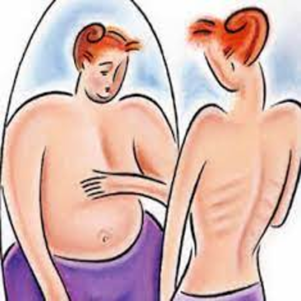
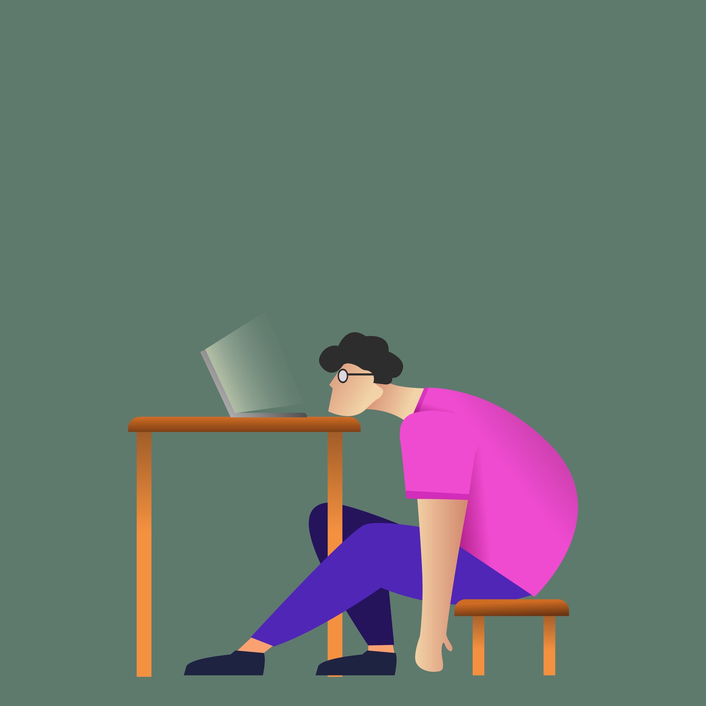
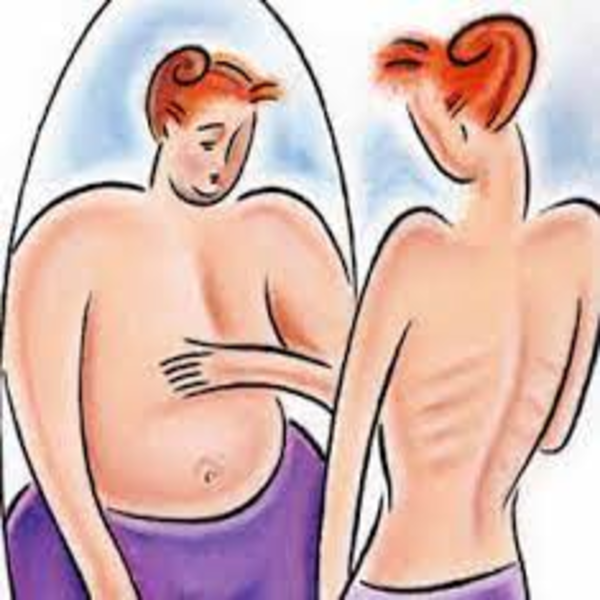
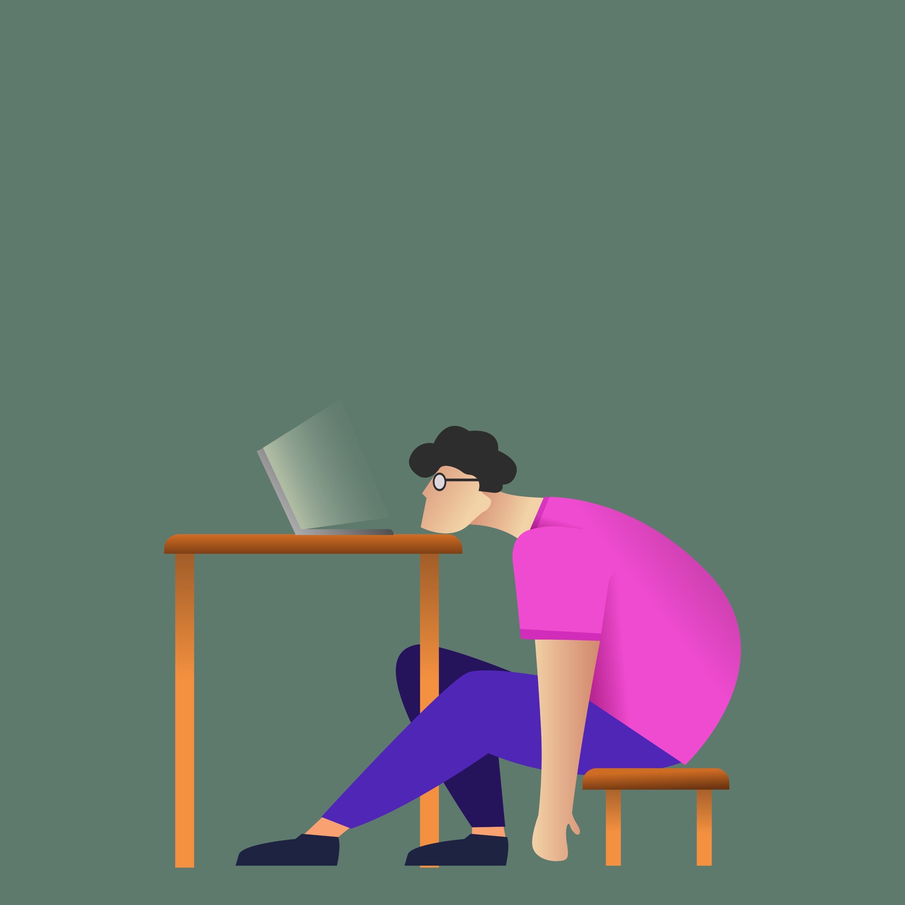

Los trastornos de la alimentación son uno de los problemas a los que se enfrenta nuestra sociedad. Los trastornos de la alimentación influyen significativamente, ya que no solo afectan al cuerpo humano, sino también afecta a las personas que tiene a su lado. Los síntomas pueden ser físicos y psicológicos.
Síntomas físicos y psicológicos
Encontrás una galería de los síntomas físicos y psicológicos, primero se mostrarán los síntomas físicos y posteriormente los psicológicos.

Falta de apetito
Bradicardia
Malestar estomacal
Pérdida de peso

Imagen corporal distorsionada

Estreñimiento

Letargo o cansancio

Disminución de temperatura

Dolor e inflamación de garganta

Depresión
Ansiedad

Pensamientos suicidas
Baja autoestima
Elevada autocrítica
Estado de ánimo bajo
Síntomas físicos y psicológicos
Encontrás una galería de los síntomas físicos y psicológicos, primero se mostrarán los síntomas físicos y posteriormente los psicológicos.
Falta de apetito
Bradicardia
Malestar estomacal
Pérdida de peso

Imagen corporal distorsionada
Estreñimiento

Letargo o cansancio
Disminución de temperatura
Dolor e inflamación de garganta
Depresión
Ansiedad